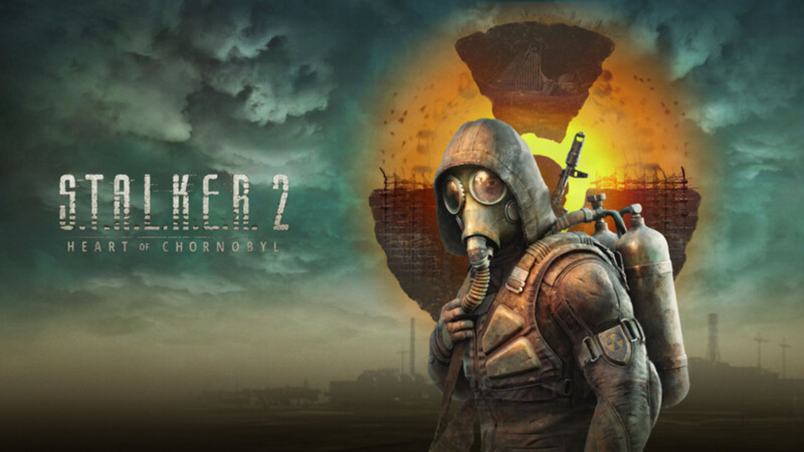

Stalker 2 : Heart of Chornobyl
Description :
Partez explorer la vaste Zone d'exclusion de Tchernobyl et ses ennemis redoutables, ses anomalies mortelles et ses puissants artefacts. Découvrez votre propre histoire épique en vous frayant un chemin jusqu'au cœur de Tchernobyl.
Captures d'écran



Vidéos
💡 Tu veux savoir si le jeu tourne sur ton PC ?
Vérifier ma configuration sur SystemReqs📦 Taille du jeu : ~160 Go
Mets un commentaire